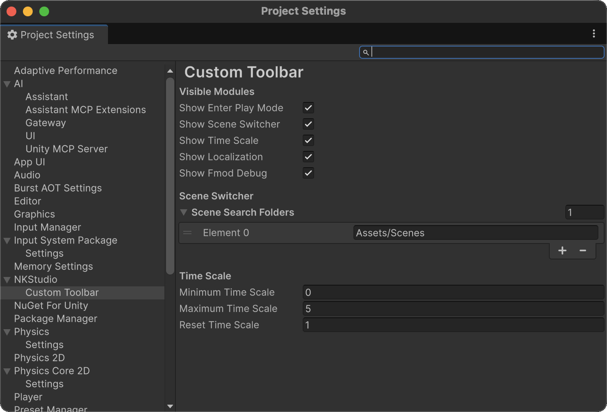
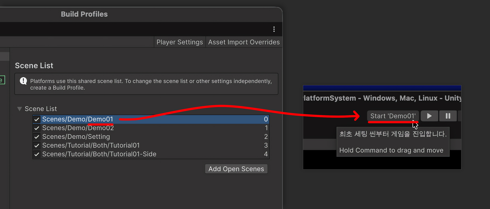
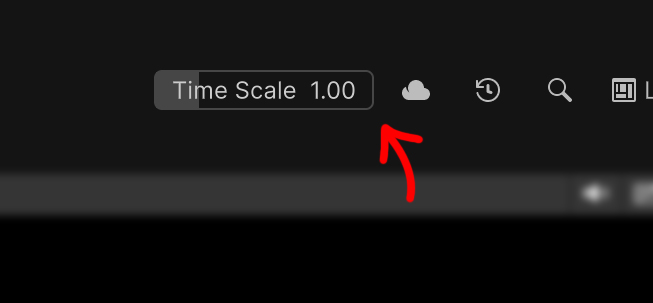

시작하기
Unity가 패키지를 Import하면 Custom Toolbar가 사용 가능한 모듈을 자동으로 등록합니다. 씬에 컴포넌트를 추가할 필요가 없습니다.
씬 폴더 설정
- Edit > Project Settings > NKStudio > Custom Toolbar를 엽니다.
- Scene Search Folders를 펼칩니다.
Assets또는Assets/Scenes처럼 그 아래에 있는 폴더를 하나 이상 추가합니다.

씬 메뉴에는 지정한 폴더에서 찾은 씬이 표시됩니다. 설정을 저장할 때 잘못된 폴더, 중복된 경로와 Assets 밖의 경로는 제거됩니다.
첫 씬 버튼은 File > Build Profiles에서 첫 번째로 활성화된 씬을 엽니다. 이전 Unity 버전에서는 이 창의 이름이 Build Settings입니다.

표시할 모듈 선택
같은 설정 페이지의 Visible Modules에서 각 기능을 표시하거나 숨깁니다.
- Enter Play Mode Options
- Scene Switcher
- Time Scale
- Localization
- FMOD Debug
Localization과 FMOD Debug는 해당 선택적 패키지도 필요합니다. 표시 설정을 변경하면 툴바가 갱신됩니다.
Time Scale 설정
Time Scale에서 최솟값, 최댓값과 Reset 값을 설정합니다. Reset 값은 설정한 최소·최대 범위를 벗어나지 않도록 자동 보정됩니다.
툴바 슬라이더로 Time.timeScale을 변경하고, 메뉴를 열어 설정한 Reset 값으로 되돌릴 수 있습니다.
